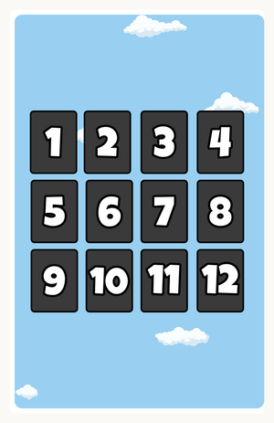

Dozito
Board Game Arena 官方规则文档
Scoring chart:
Group of 1 card: 0
Group of 2 cards: 2
Group of 3 cards: 5
Group of 4 cards: 10
Group of 5 cards: 16
Group of 6 cards: 25
Group of 7 cards: 35
Group of 8 cards: 45
Group of 9 cards: 55
Group of 10 cards: 65
Group of 11 cards: 75
Group of 12 cards: You instantly win the game!

Game summary
In “Dozito”, your goal is to form the largest groups of same-color cards within a 4x3 grid. But beware: each card exists only once and must be placed in a specific spot based on its number, from 1 to 12. Each group will score points at the end of the round — just like the Dozito suns on your cards… After 1 or 3 rounds, the player with the most points wins the game!
Turn structure
On your turn, take the top card from one of the two discard piles (Choice A), or draw the top card from the draw pile (Choice B).
Choice A
Click on one of the two top cards from the discard piles.
It is automatically placed in the matching numbered slot of your grid (e.g. a card 2 goes in slot 2). You then replace the card already present:
- If the replaced card is already face up, your turn ends: click on one of the two discard piles to discard the replaced card.
- If the replaced card is still face down, it will flip face up. You may place it into your grid or discard it to end your turn. Continue until you flip a card that matches a slot already occupied by a face-up card in your grid, or until you choose to discard your card. You must then discard one of these two cards onto a discard pile, and your turn ends.
Choice B
Click on the draw pile to reveal a card.
- If you don’t want to place it in your grid, discard it onto one of the discard piles. Your turn ends.
- If you want to place it in your grid, click the matching slot and follow the same rules as in Choice A until your turn end.
Special cards
There are three types of special cards in the game.
“STOP” cards:
If you draw a “STOP” card, your turn ends immediately after placing (or not placing) the card in your grid. The replaced card must be discarded. “STOP” cards always have three Dozito suns.
“EXTRA TURN” cards:
If you discard a “Extra Turn” card from your grid or from the draw pile, immediately take another turn.
“JOKER” cards (3 per color):
These cards have no number, meaning they can be placed anywhere in your grid. If you replace a face-up joker with a numbered card, discard the joker and end your turn.
End of round & scoring
As soon as all the cards in a player’s grid are face up at the end of their turn (including jokers), the end of the round is triggered.
All other players take one final turn, then scoring begins: score points for all valid groups, along with 1 point for each Dozito sun in your grid.
Note: Cards still face down are not revealed during scoring! They do not count for any points.
The first player of the next round is the one with the lowest total score.
After the chosen number of rounds (1 or 3), the player with the highest score wins!
If there is a tie, the player with the highest single-round score wins. If the tie persists, the victory is shared!